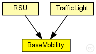

This documentation is released under the Creative Commons license
This documentation is released under the Creative Commons licenseModule which is responsible for mobility related information like position and movement BaseMobility itself defines a static mobility pattern (means only a position, no movement). Mobility modules which extend from this module will define more complex movement patterns.
The following diagram shows usage relationships between types. Unresolved types are missing from the diagram. Click here to see the full picture.
| Name | Type | Description |
|---|---|---|
| LinearMobility | simple module |
This is a linear mobility model with speed, angle and acceleration parameters. Angle only changes when the mobile node hits a wall: then it reflects off the wall at the same angle. |
| TraCIMobility | simple module |
Used in modules created by the TraCIScenarioManager. |
| Name | Type | Description |
|---|---|---|
| RSU | compound module | (no description) |
| TrafficLight | compound module | (no description) |
| Name | Type | Default value | Description |
|---|---|---|---|
| notAffectedByHostState | bool | true | |
| x | double |
x coordinate of the nodes' position (-1 = random) |
|
| y | double |
y coordinate of the nodes' position (-1 = random) |
|
| z | double |
z coordinate of the nodes' position (-1 = random) |
|
| xOrientation | double | 1 | |
| yOrientation | double | 0 | |
| zOrientation | double | 0 |
| Name | Value | Description |
|---|---|---|
| class | veins::BaseMobility | |
| display | i=block/cogwheel |
| Name | Type | Unit |
|---|---|---|
| org_car2x_veins_base_modules_mobilityStateChanged | veins::BaseMobility |
This documentation is released under the Creative Commons license